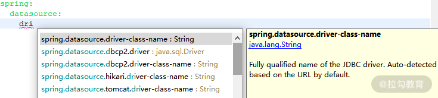
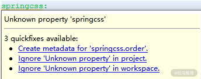
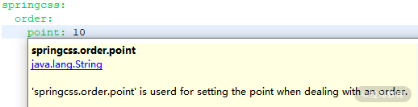
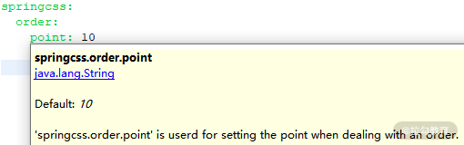

- 00 开篇词 从零开始：为什么要学习 Spring Boot？.md.html
- 01 家族生态：如何正确理解 Spring 家族的技术体系？.md.html
- 02 案例驱动：如何剖析一个 Spring Web 应用程序？.md.html
- 03 多维配置：如何使用 Spring Boot 中的配置体系？.md.html
- 04 定制配置：如何创建和管理自定义的配置信息？.md.html
- 05 自动配置：如何正确理解 Spring Boot 自动配置实现原理？.md.html
- 06 基础规范：如何理解 JDBC 关系型数据库访问规范？.md.html
- 07 数据访问：如何使用 JdbcTemplate 访问关系型数据库？.md.html
- 08 数据访问：如何剖析 JdbcTemplate 数据访问实现原理？.md.html
- 09 数据抽象：Spring Data 如何对数据访问过程进行统一抽象？.md.html
- 10 ORM 集成：如何使用 Spring Data JPA 访问关系型数据库？.md.html
- 11 服务发布：如何构建一个 RESTful 风格的 Web 服务？.md.html
- 12 服务调用：如何使用 RestTemplate 消费 RESTful 服务？.md.html
- 13 服务调用：如何正确理解 RestTemplate 远程调用实现原理？.md.html
- 14 消息驱动：如何使用 KafkaTemplate 集成 Kafka？.md.html
- 15 消息驱动：如何使用 JmsTemplate 集成 ActiveMQ？.md.html
- 16 消息驱动：如何使用 RabbitTemplate 集成 RabbitMQ？.md.html
- 17 安全架构：如何理解 Spring 安全体系的整体架构？.md.html
- 18 用户认证：如何基于 Spring Security 构建用户认证体系？.md.html
- 19 服务授权：如何基于 Spring Security 确保请求安全访问？.md.html
- 20 服务监控：如何使用 Actuator 组件实现系统监控？.md.html
- 21 指标定制：如何实现自定义度量指标和 Actuator 端点？.md.html
- 22 运行管理：如何使用 Admin Server 管理 Spring 应用程序？.md.html
- 23 数据测试：如何使用 Spring 测试数据访问层组件？.md.html
- 24 服务测试：如何使用 Spring 测试 Web 服务层组件？.md.html
- 结束语 以终为始：Spring Boot 总结和展望.md.html
04 定制配置：如何创建和管理自定义的配置信息？
03 讲中，我们介绍了 Spring Boot 中的配置体系，梳理了配置文件的组织结构以及如何通过代码实现动态的配置信息加载过程。今天我们将在 03 讲的基础上，给出更多与配置体系相关的高级用法，以及如何创建和管理各种自定义的配置信息。
如何在应用程序中嵌入系统配置信息？
我们知道 Spring Boot 通过自动配置机制内置了很多默认的配置信息，而在这些配置信息中，有一部分系统配置信息也可以反过来作为配置项应用到我们的应用程序中。
例如，如果想要获取当前应用程序的名称并作为一个配置项进行管理，那么很简单，我们直接通过 ${spring.application.name} 占位符就可以做到这一点，如下所示：
myapplication.name : ${spring.application.name}
通过 ${} 占位符同样可以引用配置文件中的其他配置项内容，如在下列配置项中，最终“system.description”配置项的值就是“The system springcss is used for health”。
system.name=springcss
system.domain=health
system.description=The system ${name} is used for ${domain}.
再来看一种场景，假设我们使用 Maven 来构建应用程序，那么可以按如下所示的配置项来动态获取与系统构建过程相关的信息：
info:
app:
encoding: @[email protected]
java:
source: @[email protected]
target: @[email protected]
上述配置项的效果与如下所示的静态配置是一样的：
info:
app:
encoding: UTF-8
java:
source: 1.8.0_31
target: 1.8.0_31
根据不同的需求，在应用程序中嵌入系统配置信息是很有用的，特别是在一些面向 DevOps 的应用场景中。
如何创建和使用自定义配置信息？
在现实的开发过程中，面对纷繁复杂的应用场景，Spring Boot 所提供的内置配置信息并不一定能够完全满足开发的需求，这就需要开发人员创建并管理各种自定义的配置信息。例如，对于一个电商类应用场景，为了鼓励用户完成下单操作，我们希望每完成一个订单给就给到用户一定数量的积分。从系统扩展性上讲，这个积分应该是可以调整的，所以我们创建了一个自定义的配置项，如下所示：
springcss.order.point = 10
这里，我们设置了每个订单对应的积分为 10，那么应用程序该如何获取这个配置项的内容呢？通常有两种方法。
使用 @Value 注解
使用 @Value 注解来注入配置项内容是一种传统的实现方法。针对前面给出的自定义配置项，我们可以构建一个 SpringCssConfig 类，如下所示：
@Component
public class SpringCssConfig {
@Value("${springcss.order.point}")
private int point;
}
在 SpringCssConfig 类中，我们要做的就是在字段上添加 @Value 注解，并指向配置项的名称即可。
使用 @ConfigurationProperties 注解
相较 @Value 注解，更为现代的一种做法是使用 @ConfigurationProperties 注解。在使用该注解时，我们通常会设置一个“prefix”属性用来指定配置项的前缀，如下所示：
@Component
@ConfigurationProperties(prefix = "springcss.order")
public class SpringCsshConfig {
private int point;
//省略 getter/setter
}
相比 @Value 注解只能用于指定具体某一个配置项，@ConfigurationProperties 可以用来批量提取配置内容。只要指定 prefix，我们就可以把该 prefix 下的所有配置项按照名称自动注入业务代码中。
我们考虑一种更常见也更复杂的场景：假设用户根据下单操作获取的积分并不是固定的，而是根据每个不同类型的订单会有不同的积分，那么现在的配置项的内容，如果使用 Yaml 格式的话就应该是这样：
springcss:
points:
orderType[1]: 10
orderType[2]: 20
orderType[3]: 30
如果想把这些配置项全部加载到业务代码中，使用 @ConfigurationProperties 注解同样也很容易实现。我们可以直接在配置类 SpringCssConfig 中定义一个 Map 对象，然后通过 Key-Value 对来保存这些配置数据，如下所示：
@Component
@ConfigurationProperties(prefix="springcss.points")
public class SpringCssConfig {
private Map<String, Integer> orderType = new HashMap<>();
//省略 getter/setter
}
可以看到这里通过创建一个 HashMap 来保存这些 Key-Value 对。类似的，我们也可以实现常见的一些数据结构的自动嵌入。
为自定义配置项添加提示功能
如果你已经使用过 Spring Boot 中的配置文件，并添加了一些内置的配置项，你就会发现，当我们输入某一个配置项的前缀时，诸如 IDEA、Eclipse 这样的，IDE 就会自动弹出该前缀下的所有配置信息供你进行选择，效果如下：

IDE 自动提示配置项的效果图
上图的效果对于管理自定义的配置信息非常有用。如何实现这种效果呢？当我们在 application.yml 配置文件中添加一个自定义配置项时，会注意到 IDE 会出现一个提示，说明这个配置项无法被 IDE 所识别，如下所示：

IDE 无法识别配置项时的示意图
遇到这种提示时，我们是可以忽略的，因为它不会影响到任何执行效果。但为了达到自动提示效果，我们就需要生成配置元数据。生成元数据的方法也很简单，直接通过 IDE 的“Create metadata for 'springcss.order.point'”按钮，就可以选择创建配置元数据文件，这个文件的名称为 additional-spring-configuration-metadata.json，文件内容如下所示：
{"properties": [{
"name": "springcss.order.point",
"type": "java.lang.String",
"description": "A description for 'springcss.order.point'"
}]}
现在，假如我们在 application.properties 文件中输入“springcss”，IDE 就会自动提示完整的配置项内容，效果如下所示：

IDE 自动提示 springcss 前缀的效果图
另外，假设我们需要为 springcss.order.point 配置项指定一个默认值，可以通过在元数据中添加一个"defaultValue"项来实现，如下所示：
{"properties": [{
"name": "springcss.order.point",
"type": "java.lang.String",
"description": "'springcss.order.point' is userd for setting the point when dealing with an order.",
"defaultValue": 10
}]}
这时候，在 IDE 中设置这个配置项时，就会提出该配置项的默认值为 10，效果如下所示：

IDE 自动提示包含默认值的 springcss 前缀效果图
如何组织和整合配置信息？
在上一课时中，我们提到了 Profile 概念，Profile 可以认为是管理配置信息中的一种有效手段。今天，我们继续介绍另一种组织和整合配置信息的方法，这种方法同样依赖于前面介绍的 @ConfigurationProperties 注解。
使用 @PropertySources 注解
在使用 @ConfigurationProperties 注解时，我们可以和 @PropertySource 注解一起进行使用，从而指定从哪个具体的配置文件中获取配置信息。例如，在下面这个示例中，我们通过 @PropertySource 注解指定了 @ConfigurationProperties 注解中所使用的配置信息是从当前类路径下的 application.properties 配置文件中进行读取。
@Component
@ConfigurationProperties(prefix = "springcss.order")
@PropertySource(value = "classpath:application.properties")
public class SpringCssConfig {
既然我们可以通过 @PropertySource 注解来指定一个配置文件的引用地址，那么显然也可以引入多个配置文件，这时候用到的是 @PropertySources 注解，使用方式如下所示：
@PropertySources({
@PropertySource("classpath:application.properties "),
@PropertySource("classpath:redis.properties"),
@PropertySource("classpath:mq.properties")
})
public class SpringCssConfig {
这里，我们通过 @PropertySources 注解组合了多个 @PropertySource 注解中所指定的配置文件路径。SpringCssConfig 类可以同时引用所有这些配置文件中的配置项。
另一方面，我们也可以通过配置 spring.config.location 来改变配置文件的默认加载位置，从而实现对多个配置文件的同时加载。例如，如下所示的执行脚本会在启动 customerservice-0.0.1-SNAPSHOT.jar 时加载D盘下的 application.properties 文件，以及位于当前类路径下 config 目录中的所有配置文件：
java -jar customerservice-0.0.1-SNAPSHOT.jar --spring.config.location=file:///D:/application.properties, classpath:/config/
通过 spring.config.location 指定多个配置文件路径也是组织和整合配置信息的一种有效的实现方式。
理解配置文件的加载顺序
通过前面的示例，我们看到可以把配置文件保存在多个路径，而这些路径在加载配置文件时具有一定的顺序。Spring Boot 在启动时会扫描以下位置的 application.properties 或者 application.yml 文件作为全局配置文件：
–file:./config/
–file:./
–classpath:/config/
–classpath:/
以下是按照优先级从高到低的顺序，如下所示：

Spring Boot 会全部扫描上图中的这四个位置，扫描规则是高优先级配置内容会覆盖低优先级配置内容。而如果高优先级的配置文件中存在与低优先级配置文件不冲突的属性，则会形成一种互补配置，也就是说会整合所有不冲突的属性。
如何覆写内置的配置类？
关于 Spring Boot 配置体系，最后值得介绍的就是如何覆写它所提供的配置类。在前面的课程中，我们已经反复强调 Spring Boot 内置了大量的自动配置，如果我们不想使用这些配置，就需要对它们进行覆写。覆写的方法有很多，我们可以使用配置文件、Groovy 脚本以及 Java 代码。这里，我们就以Java代码为例来简单演示覆写配置类的实现方法。
在后续的“如何使用 Spring 构建系统安全层？”专题中，我们将会引入 Spring Security 框架来实现对服务访问的权限控制。在 Spring Security 体系中，设置用户认证信息所依赖的配置类是 WebSecurityConfigurer 类。顾名思义，这是一个设置 Web 安全的配置类。Spring Security 提供了 WebSecurityConfigurerAdapter 这个适配器类来简化该配置类的使用方式，我们可以继承 WebSecurityConfigurerAdapter 类并且覆写其中的 configure() 的方法来完成自定义的用户认证配置工作。典型的 WebSecurityConfigurerAdapter 子类及其代码实现如下所示：
@Configuration
public class SpringHCssWebSecurityConfigurer extends WebSecurityConfigurerAdapter {
@Override
@Bean
public AuthenticationManager authenticationManagerBean() throws Exception {
return super.authenticationManagerBean();
}
@Override
@Bean
public UserDetailsService userDetailsServiceBean() throws Exception {
return super.userDetailsServiceBean();
}
@Override
protected void configure(AuthenticationManagerBuilder builder) throws Exception {
builder.inMemoryAuthentication().withUser("springcss_user").password("{noop}password1").roles("USER").and()
.withUser("springcss_admin").password("{noop}password2").roles("USER", "ADMIN");
}
}
关于该类的具体展开超出了今天的讨论内容范围，我们在后续课程介绍到 Spring Security 时会对上述代码进行详细的展开，这里我们只需要知道，在 Spring Boot 中，提供了一些类的内置配置类，而开发人员可以通过构建诸如上述所示的 SpringCssWebSecurityConfigurer 类来对这些内置配置类进行覆写，从而实现自定义的配置信息。
小结与预告
通常在 Web 应用程序的开发过程中，或多或少都会涉及定制化配置信息的使用。在今天的课程中，我们详细介绍了如何创建和使用自定义配置信息的实现过程，同时也给出了如何组织和整合各种配置信息的方法。